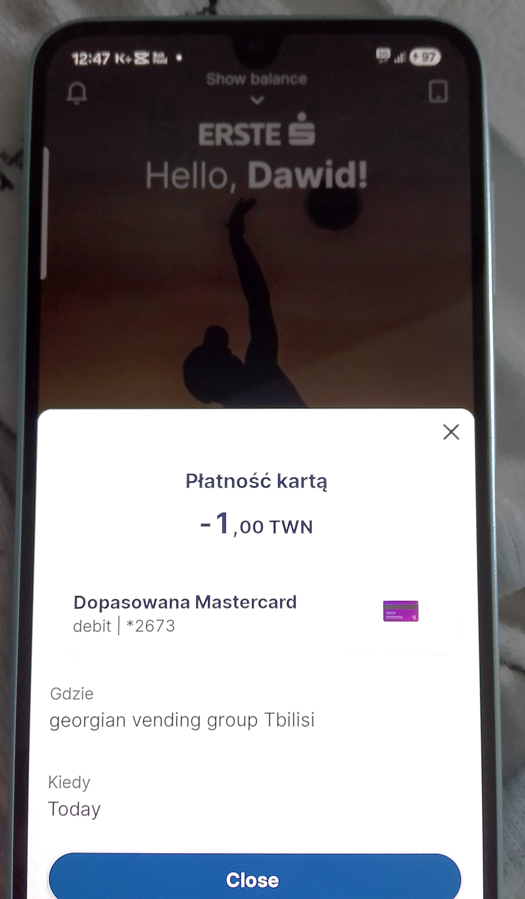

A vending machine in Batumi charged 1 GEL for coffee — and the bank statement called it TWN, a currency that doesn't exist. This blog is the full case file: the evidence photo, the ghost-currency story, and the traveller guides that came after.

The amount was correct. The merchant was real. Only the currency code was wrong — a broken tag that turned an ordinary Georgian lari payment into a "New Taiwan Dollar" mystery. Every post in this blog circles that one line on the statement.
1 GEL coffee TWN code Alliance Palace Erste Bank
How a 1 GEL vending-machine coffee appeared on a bank statement as "TWN" — the full investigation, from the Alliance Palace machine to the bank's explanation.
Read the story Deep diveTWN looks like an ISO code, trades on no exchange, and is issued by no central bank. A forensic look at a phantom ticker.
Read MarketsWhat happens when you try to look up a quote for a currency that isn't a currency? Tickers, lookup traps and dead ends.
Read FX guideThe real Taiwan dollar (TWD) exists and trades daily. How SGD/TWD conversion actually works — and why TWN isn't part of it.
Read TransparencyWho writes this case file, what was verified, what is creative account — and how every claim in the TWN story is sourced.
ReadGeorgian lari for visitors: exchange offices, ATMs, card payments, DCC traps and what to do when a statement looks wrong.
Read ExplainerThe short version of the whole case file: what TWN on your statement really means, and why the fix is a phone call, not a fraud report.
Read